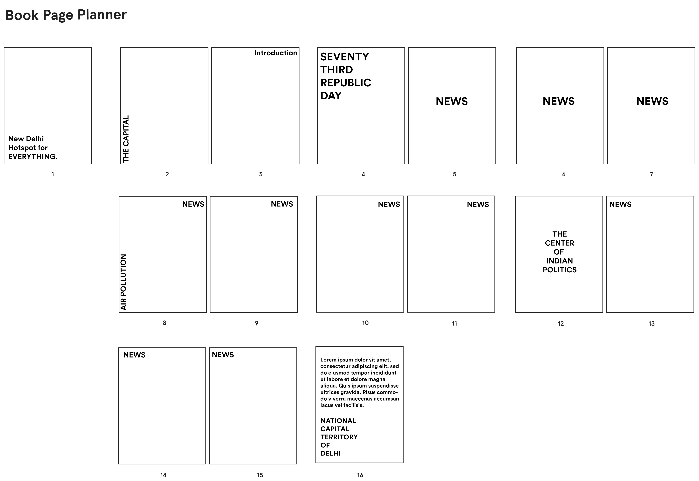
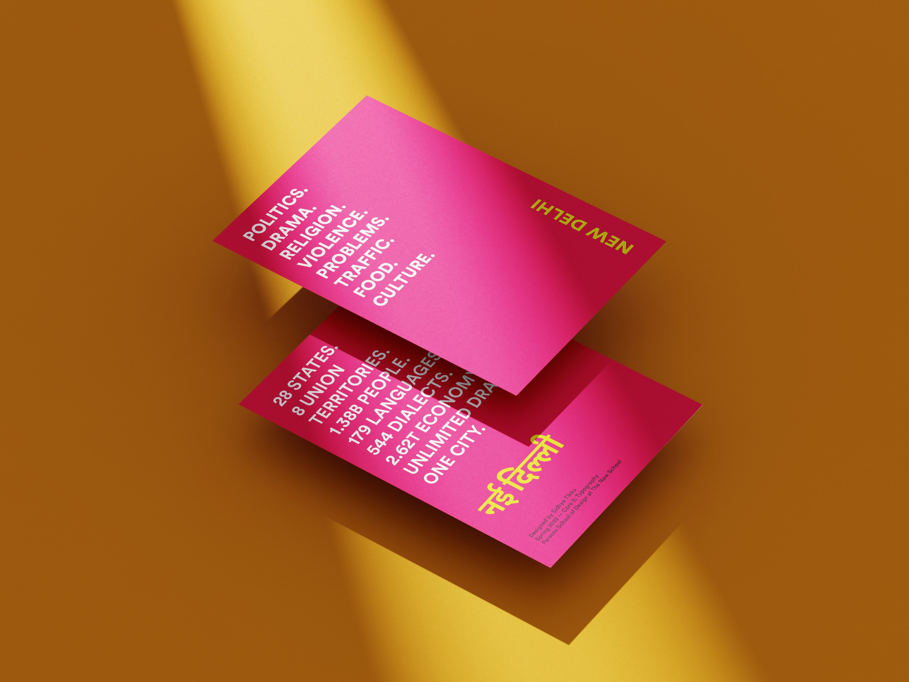
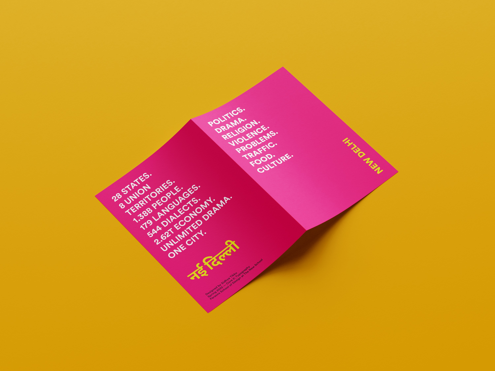
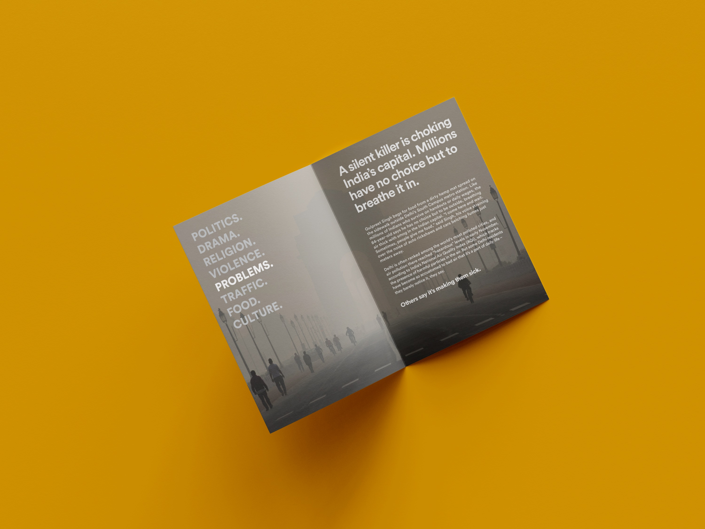
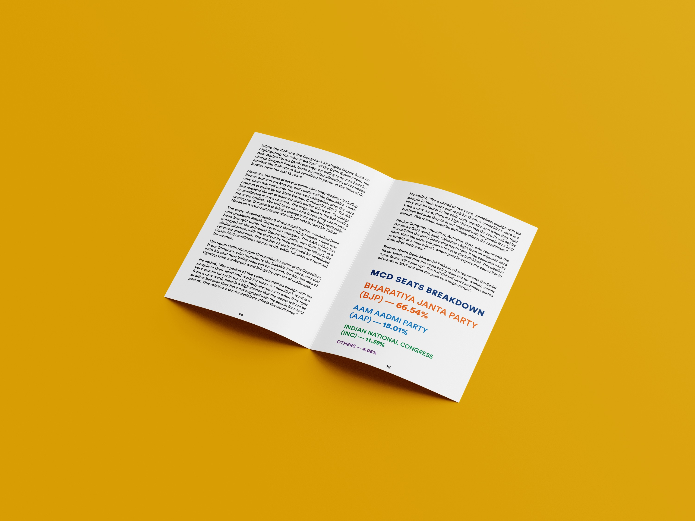
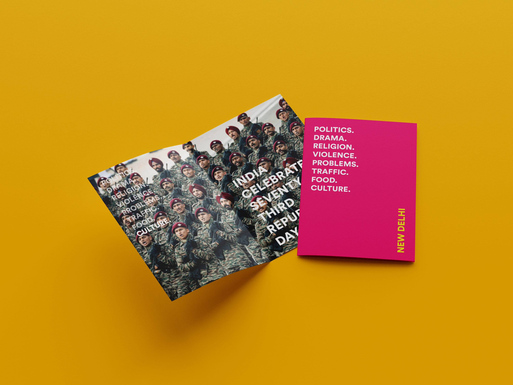

New Delhi Instant Paper
This prompt of this project was to create a leaflet about your home and that leaflet should have materials about your home. Being born and raised in New Delhi, The Capital of India, I decided to create something that captures its overall aura. The requirements were to print it within 16 pages.
Ideation
As The Capital of India, a lot of activties happen in New Delhi. From Politics to Arguments, Violence to Pollution, everything that happens in India, happens in New Delhi. It is also the most diverse city in India, with almost al the cuisines available and languages spoken. The idea behind this print material was to create a local newspaper that prints latest news 3 times a day. The primary typeface is Circular and Noto Sans Devanagari, sans serif typefaces. Later on in the project, a system of categories was added to make it seem more like a newspaper.

Execution
After receiving satisfactory feedback on the mockups, I went ahead on Adobe InDesign to typeset news articles about New Delhi. The colour scheme of the cover page changes but the content and the structure of the cover page remains the same. The relevant news category is also highlighted and the news articles always begin with a full bleed image. The medium of the final product was laserjet printer on glossy paper and was staple binded. The overall focus was to create a "magazine-like" experience which allowed readers an engaging experience.




